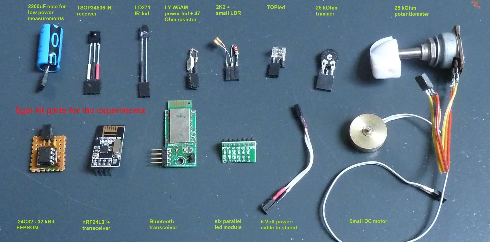
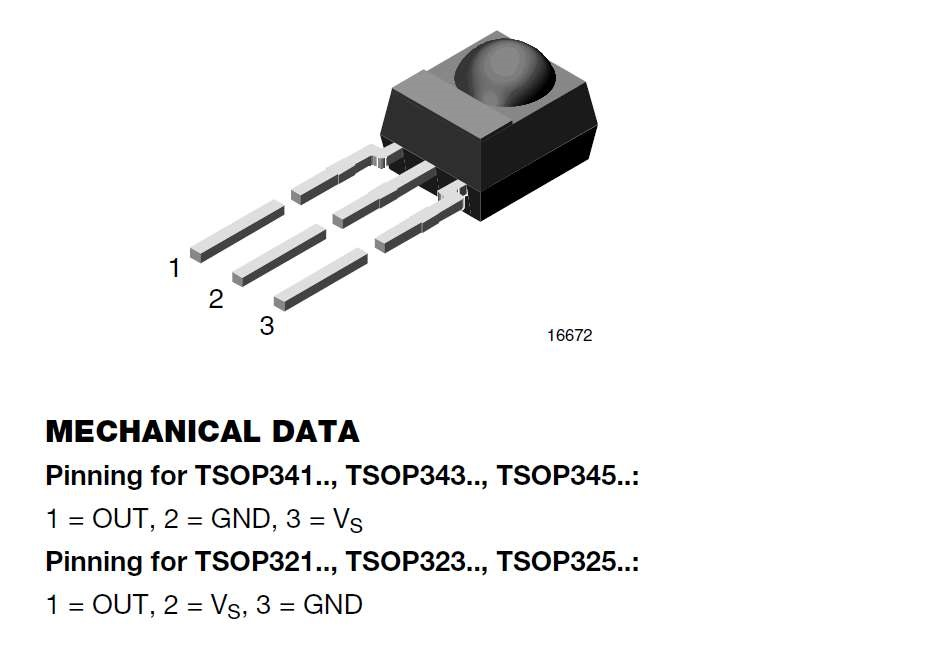
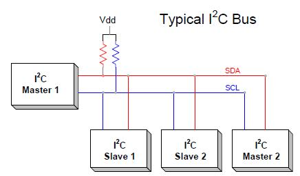
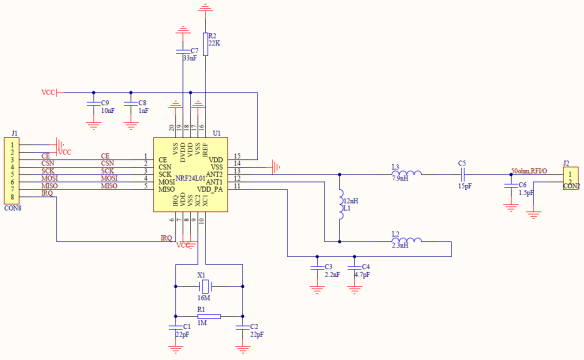
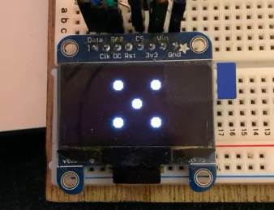
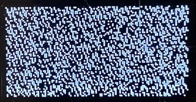
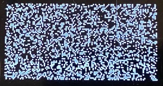
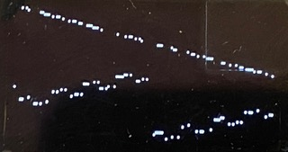
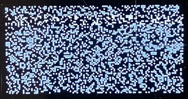

Willem Ouwerkerk with help from Albert Nijhof
juli 2016, full revision 2020
Leon Konings, Frans vd Markt,
Jeroen Hoekstra & Willem Ouwerkerk
The 'Egel project' consists of about 50 elementary examples
of hardware control with the MSP430 in the language forth.
In each example you find a file with forth source code, documentation
and links to more information on the internet.

It is our aim to lower the hurdles that beginners with the
MSP430 MPU find on their way to hardware programming using noForth software.
With the many examples in the Egel project we hope to make
it easier to understand the Texas Instruments documentation.
We recommend to read the chapters 0, 1, 2 and 3 before you choose the chapters that have your special interest!
History The original
Egel werkboek
was written in 1997 for the AT89C2051 microcontrollers
by a group of Dutch Forth-gg members.
It was initially named 'Postzegelboek' (dutch) but that was considered
to be too long, so it was shortened to 'Egelboek'.
noForth C2553 or V2553 as hex-file, contained in the zipfile noforths 2553.zip .
The TI program Uniflash to burn noForth on the LaunchPad or Egel-kit.
Read this document when you use the Egel-kit.
Communication-program on your computer (Windows, Linux or OSX see the homepage).
Text-editor like Crimson or Notepad++
USB-serial cable to connect the board to your computer.
Using the noForth homepage as guide, load noForth on the Egel-kit or LaunchPad.
Install the communication-program.
Connect the LaunchPad to the PC with the USB-serial cable.
Then - start the LaunchPad and Terminal:
Start the communication (terminal) program. In that program, select the port to which the
Egel-kit or LaunchPad is connected, and start a connection.
NoForth returns ok on each enter if it is running. If not, check that you have done all the steps. If at first you don t succeed...
Then load the noforth tools.f :
Once noForth is running, load the noForth tools to get additional functionality like: .S SEE
and WORDS. Download the file noforth tools.f on your PC. Then upload the file to the Egel-kit or Launchpad using your communication program.
With some programs it is possible to copy/paste the source code into the window of the communication-program.
Once the noForth tools are loaded, typing 'WORDS' will show an overview of the dictionary. Well done! noForth and the tools are running, and you have loaded your first noForth-program..
Disconnect the Egel-kit/LaunchPad does not delete noForth or the tools. Reloading both is usually only needed if you want a different version of noForth.
Then - load the noForth program e00: Load the noForth program e00 (see above) on the board and enter FLASH .
Then - try to understand the source-code: If you look at the source-code you will see explanatory comments.
Studying and experimenting with the source code is an excellent way of learning to program in noForth!
Feel free to change the source-code and see what happens.
Finally - Reloading source-code It is smart to delete old source-code first before loading a new version, or you could run out of memory.
There is a handy tool in noForth for this, a shield. When called, all words defined after it are deleted. The
noForth-tools you loaded earlier are terminated by the shield 'TOOLS\'. Type this to delete the old source-code.
Then load the new source-code and see what effect your changes have.
For more information on shields, see the 'noForth documentation'.
Byte wide output to I/O-port 2, connected to eight LEDs
In this example 8 LEDs are controlled by a noForth program.
If this is the first time you use noForth on a MSP430, it might be good to first work through chapter 0,
which gives a detailed overview of the steps needed to get a noForth program running.
Setup of hardware:
Place eight LEDs on the breadboard. Connect the individual anodes to pins P2.0 ... P2.7 of the LaunchPad with wires.
(more information on the ports in SLAU144J.PDFpage 328ff.
More information on P2SEL on page 50ff. of SLAS735J.PDF)
Connect the cathodes of the LEDs together on the
breadboard with wires connect them to
the ground using a 100 Ohm resistor, and finally connect the ground of the breadboard to the ground of the LaunchPad.
noForth program e01:
Program e01 contains two commands, COUNTER and RUNNER which demonstrate how to control the LEDs. Both terminate if you press any key.
Forth commands:
COUNTER ( -- ) Binary counter on P2
RUNNER ( -- ) Running light on P2
* Open images in a new window for a better resolution.
Byte output to I/O port wired with 8 LEDs and bit input using a switch
This chapter builds on the previous chapter. The addition is the S2‑switch
(if you use the Egel-board and/or MSP-EXP430G2 than the switch is already on the board), which is connected to port P1.3 for input. 1.
The forth commands remain the same:
COUNTER ( -- ) Binary counter on P2
RUNNER ( -- ) Running light on P2
When the S2‑switch is held down the LEDs will run at a higher speed in COUNTER and RUNNER.
* Open images in a new window for a better resolution.
Analog to digital conversion using the internal AD converter, output to LEDs
This chapter is an extension of chapter 1 and 2. This time a potentiometer of about 4K7 is added. Connect the center wire of the potentiometer to P1.7 and the other two wires to VCC and ground.
You can find more info about the ADC10, inSLAU144J.PDFon page 534 and beyond.
The forth commands:
SHOW-ADC1 ( -- ) Show ADC result in binary
SHOW-ADC2 ( -- ) Show ADC result as VU-meter
SHOW-ADC3 ( -- ) Show ADC result on screen as text
The only way these routines differ are in the way the results are shown.
* Open images in a new window for a better resolution.
This chapter shows how to connect a Bluetooth module to a Launchpad,
use that module to receive characters and show these characters using 8 LEDs.
You can use either the HC06 or HC08 module. These modules behave like a standard serial port, only without wires!
They need a voltage of 3.3V. In this example we use the RS232 (TX/RX TTL levels) interface.
For more information see the HC08 datasheet.
Connect the HC06/08 with the Launchpad:
HC06/08 power (pin12 and 13) with Launchpad J6 (VCC and GND),
HC06/08 TX and RX (pin1 and 2) with Launchpad J1 (pin3 and 4).
Connect 8 LEDs as in chapter 1.
Remove the jumpers TX and RX at J3 from the Launchpad.
When you use the Egel-kit just press the board on the connector marked
'BLUETOOTH' as is shown on the picture.
A relay is a very useful device. It enables a small device, like a micro-controller,
to switch currents or voltages which the device itself could not handle.
This example shows how to control a relay and emulates the delay used for elevator doors.
Place a 5-Volt relay on the shield, as shown in the schematic and photo.
Please note that the driving transistor and the voltage powering the relay may need adaptation.
The Egel kit already contains a mosfet to drive the relay. Just connect the relay to the PWR-output!
Bit input comes from P1.3 (S2).
Bit output goes to P2.4.
Forth command: RELAY-CONTROL ( -- ) By default an off delay is performed here.
Try different kinds of delays by changing the lines in the word RELAY-CONTROL
with the backslashes. Only select one option at a time!
Being able to control a stepper motor is very useful for robot- and other projects where something has to move.
noForth on a MSP430 micro-controller makes it easy!
The used module has a ULN2003 driver on it.
It only needs 5 wires to control a stepper-motor.
Launchpad - connections:
P2.0 .. P2.3 (output) with IN1 .. IN4 of the ULN2003 driver
+5 Volt and Gnd
Switch S2 to P1.3 if you do not use the Egel-kit or MSP430 starterkit
Forth command: STEPPER ( -- ) Change direction with S2‑switch.
The default method is a one-phase stepper.
By editing the word ONE-STEP you may select single phase,
two phase or half step driven stepper control. Only choose one method at a time.
There are two usual kinds of stepper motors: unipolar and bipolar.
This example shows control of a bipolar stepper motor, the unipolar motor is used in the previous chapter.
The used module has two L9110S drivers on it.
It only takes 4 wires
to control a bipolar stepper motor.
Launchpad - connections:
P2.0 .. P2.3 (output) with A1-B, A1-A, B1-B and B1-A of the driver
+5 Volt and Gnd
Switch S2 to P1.3 ( if you do not use the Launchpad or Egel-kit )
Forth command: STEPPER ( -- ) Change direction with S2-switch.
The default method is a one-phase stepper,
By editing the word ONE-STEP you may select single phase,
two phase or half step driven stepper control. Only choose one method at a time!
Measuring distances is useful in many applications. It can easily be done with an ultrasound sensor and a MSP430.
Connect the SR04 sensor
with the MSP430 and place the LED-board on the shield.
P1.3 is the input bit. The length of the received pulse, in microseconds, is converted to the distance.
P1.4 is the output bit, a positive pulse starts a new measurement.
This example is software timed, so the result very much depends on
1) The clock frequency
2) Active interrupts
3) The Forth implementation
Forth command:
MEASURE - Show distance in steps of 2cm binary on LEDs
The usable range of the low-cost Chinese version of the HC-SR04 is around 2cm to 220cm.
Pulse-width modulation (PWM) is used to simulate an analogue output, for instance for controlling the brightness of a LED.
Connect two switches, a transistor and a power LED using the schematic and photo.
The 'up' key is connected to P1.4,
The 'down' key is connected to P1.5.
The transistor is connected via resistor R2 to P2.4
Timer TA1 is used as a pulsewidth modulator, with a frequency of about 4KHz and a resolution of 1000 steps.
Forth commands:
CYCLUS ( -- ) Cycle once thru PWM range
POWERCONTROL ( -- ) Set PWM value using two switches
The two switches control the brightness of the LED by varying the duty-cycle.
This program is so simple because it utilizes the intrinsic PWM-functionality of the MSP430.
A software-only solution would use up all available CPU capacity.
Load the assembler before the e10 noForth programs,
some parts of the program are in assembler code.
The RC-5 protocol is used by the remote-control of most televisions. This example shows how to emulate it.
For the Egel Kit: connect an IR-LED to the LED connector P2.1. If you use a LaunchPad, add a resistor to the LED.
Timer A1 generates 36KHz pulses with 25% PWM at P2.1.
The S2‑switch activates the transmitter.
More info about timer-A1, inSLAU144J.PDFon page 356ff.
Configuration of the I/O-pins from page 50ff. in SLAS735J.PDF
Forth command:
RC-TRANSMITTER ( -- ) Send the RC5 on/off command
This program will startup after every reset.
If you do not want this, press reset while holding down S2.
11
7-segment display driver with CD4094 or 74HC595
Using a shift-register to drive a 7-segment display
A shift-register converts serial data to parallel data, this makes it possible to control a 7-segment display with 3 wires to the MSP430.
Connect a 74HC(T)4094 to VCC and ground
Strobe 74HC(T)4094 pin-1 to P2.0
Data 74HC(T)4094 pin-2 to P2.1
Clock 74HC(T)4094 pin-3 to P2.2 (N.B.)
Pin 15 to VCC too.
Connect the eight output pins (4 to 11) of the 74HC(T)4094
to a 7-segment display. See schematics.
Connect a 74HC595 to VCC and ground
Strobe 74HC595 pin-12 to P2.0
Data 74HC595 pin-14 to P2.1
Clock 74HC595 pin-11 to P2.2 (N.B.)
Pin 13 to ground & pin 10 to VCC too.
Connect the eight output pins (15 and then 1 to 7) of the 74HC595
to a 7-segment display. See schematics.
If more digits are needed, it is possible to connect more 74HC4094s or 74HC595s to each other.
The strobe and clock lines are connected in parallel, a separate data-line is needed for each display. See schematics.
Common-anode displays can also be used. In that case connect the ground connections of the display to VCC (see schematics) and use software e11a.
Software e11b is for the shown common cathode displays.
Decimal counter
Forth commands:
CHARACTERS ( -- ) Show all implemented characters
COUNTER ( -- ) Show a decimal counter
DICE ( -- ) Simulate a tumbling dice
Using a 4-bit parallel interface & PWM-based contrast-control
A LCD-display with 2 lines of 16 characters is useful in a lot of projects. Only 6 connections are needed to show text on the display.
One more connection controls the contrast of the display. In this example timer-A1 generates the needed PWM-signal.
The two capacitors and diodes are forming a charge pump.
This charge pump is used to generate the negative voltage for the contrast control of the LCD.
Connect a 3 Volt version of a 1602 LCD display with P2.0 .. P2.5 (see schematics)
P1.6 is the contrast control output for the LCD.
Timer-A1 is used for contrast control of the LCD, see schematic.
When the text is not visible or legible, try adjusting the contrast-setting with >CONTRAST. Values between 0 and 16 are valid.
Forth commands:
>CONTRAST ( +n -- ) Set contrast to +n (valid values: 0:16)
DEMO1 ( -- ) Show text message 1
DEMO2 ( -- ) Show text message 2
Using timer-A0 for increased accuracy, with timeout
This chapter builds on chapter 8. Again ultrasound is used to measure distance, but better!
In this example both accuracy and resolution of the measurements are higher,
by better use of the features of the MSP430 with better software.
Time is measured with timer-A0, with a microsecond resolution. An advantage of using a timer is that activated interrupts do not influence the result.
If timer-A0 is already in use, change the register addresses of timer-A0 to addresses of a free,
similar timer (see slas735J page 18).
This variant times out after ~65 milliseconds, so it will not hang if nothing is measured.
Connect the SR04 sensor or similar, with four wires to the MSP430
place a LED-board or connect individual LEDs (see schematics).
The word DISTANCE starts the US-sensor, and returns a distance to the nearest object in centimeter.
When in the source-code in the word DISTANCE, >CM is changed to
>MM the distance is returned in millimeters.
The usable range of available US-sensors varies. The cheap Chinese HC-SR04 modules have a range of 2cm to 220cm.
Other variants may have different ranges, sometimes up to 600 cm.
The photo shows three pin-compatible replacements for the HC-SR04.
The US-015 is more stable and has more accurate readings
The RCW-0001 is much smaller and works from 3 Volt.
The US-100 works from 2.4 Volt and has an additional mode with an increased resolution.
It also has built-in temperature-compensation resulting in solid-as-a-rock measurements.
The distance is measured in millimeters. See chapter E17 for example code.
Forth commands:
US-ON ( -- ) Activate ultrasonic hardware
DISTANCE ( -- cm ) Show object distance in cm (or mm)
MEASURE ( -- ) Show object distance on LEDs
The outputs are P1.6 and P2.1.
The timers in the MSP430 are well suited to generate sounds of varying frequencies.
By using two timers, two different frequencies can be generated at the same time.
The frequency range is 61 Hz to 39000 Hz. In this example P1.6 and P2.1 are used as outputs.
Both ports must be wired to a 32 to 50 Ohm speaker, connect the other lead of the speaker to ground.
Program 14a plays simple music scores.
Play the hunting horn
Program 14b generates DTMF tones!
Call the Forth users group
The forth commands for e14a:
HONK ( -- ) Sound a heavy horn
HUNTING ( -- ) Play the hunting horn
BJOHN ( -- ) Play Brother John
And for e14b:
>DTMF ( addr u -- ) Convert string to DTMF tones
WILLEMO ( -- ) Call the author
FORTHGG ( -- ) Call Forth-gg chairman
The MSP430 processor can use one of several system-clock sources.
This example allows you to experiment with this feature.
The frequency of the clock-source strongly influences the power-consumption.
By connecting an ampere-meter you can see this effect.
Programs e15a and e15b are the same except for the speed of communication.
Program e15a connects at 9600 baud, and works with all noForth versions for the MSP430G2553 Launchpad.
Program e15b only works on the Egel kit, but communicates at 38400 baud.
The 12kHz and 32kHz noForth words activate the Very Low Frequency or 32kHz oscillator.
At 12kHz serial communication is not possible, due to the low and inaccurate frequency of the VLO.
At 32kHz communication is only possible at 9600 baud.
To allow for a function-check with an oscilloscope or logic analyzer,
two additional programs activate the 12kHz or 32kHz frequency on output P1.0.
For more information about the built-in capacitors for the 32kHz oscillator, see SLAU144J.PDF page 274 and beyond.
The MSP430 can function with or without a crystal. To ensure good accuracy without a crystal,
T.I. calibrates every individual MSP430.
The calibration-data for the DCO starts at address 10F6 (within the info-flash segment A starting at 10C0) and
both e15a and e15b make use of the calibration-data.
Please note that programming FLASH-memory is not possible if the MSP430 is running at 32 kHz,
as the FLASH-memory clock must be in the range of 257-476 kHz.
The Forth commands for e15a & e15b:
12KHZ ( -- ) Use VLO oscillator
32KHZ ( -- ) 32kHz oscillator active
1MHZ ( -- ) Set DCO at 1 MHz
8MHZ ( -- ) Use DCO at 8MHz
16MHZ ( -- ) DCO on 16MHz
BLINK ( ccc -- ) Run blinker at freq. 'ccc'
Example of BLINK this is how: BLINK 32KHZ or one of the other frequencies.
It demonstrates that the timing of the MSP430 is independent of the used system-clock by flashing
both LEDs every 6 seconds. After the program is finished, the default MPU frequency is restored.
Load the assembler before the e16 noForth programs,
the software RS232 routines are in assembler code.
This example shows how to code half, and full duplex UART-connections using only
software (=bitbang method). That is without using the specific UART hardware on the MSP430.
To use the examples, first make a second RS232 connection: connect the RX lead to P2.0
(logic level) and the TX lead to P2.1 and connect ground to ground.
Then open a second terminal window for the new port.
Load one of the programs and press the RESET-button.
Output should now appear in the second terminal window.
The first variant (e16a) does not use an interrupt and is half duplex only.
The second variant (e16b) reads incoming characters using a receive-interrupt based on timer-A0.
This gives you about 3/4 duplex. The reception of characters is faultless, but the
sending of characters is occasionally spoiled by the receive-interrupt.
The third variant (e16c), in addition to the receive-interrupt, also uses a transmit-interrupt
based on timer-A1. This is a full duplex connection, but uses all the timers on board
of the MSP430G2553.
You can use the following commands to test your program in the old RS232 configuration (before pressing RESET):
Type: RS-ON To initialise software RS232.
Type: CH # RS-EMIT MANY To test RS232 output.
Type: COLD When these routines work.
Check the results on your screen in the terminal windows.
To go back to the old configuration hold S2 and then press the RESET-button.
The newly added RS-ON routine is skipped and you're back in the original configuration.
Using timer-A0 for software RS232 - NOW with timeout!
This example shows how to measure a distance with a US-100 sensor in serial mode using RS232.
Connect the US-100 sensor with four wires to the MSP430 as shown.
In this example we use timer‑A0 for the RS232 connection (see previous chapter).
When timer‑A0 is already in use, change the register addresses to those of a similar free timer.
The word DISTANCE starts the US-sensor, and returns the distance to the nearest
object in millimeters. The distance-measurement by the US-100 module is very stable due to
the built-in temperature compensation.
The range of the sensor is about 30mm to 4000mm and it works from 2.4 Volt to 5 Volt.
The used serial mode has an increased resolution.
Forth commands:
RS-ON ( -- ) Activate sofware serial interface
DISTANCE ( -- mm ) Show object distance in millimeters
MEASURE ( -- ) Show object distance on screen
This chapter provides an interface to the Robotic sensor module Even
if you do not own such a sensor-module, it might still be a useful example.
For instance when you want to add a couple of DIY touch-sensors to a robot.
Adapting the software for that is easy.
Print layout for the simple robotic sensor unit. On it two feelers, a PIR sensor and two LEDs.
The internal schematic of the SB312A smart PIR sensor unit. Note that the sensor
has it's own 3 Volt voltage stabiliser. The sensor output already has a 10 kOhm resistor.
Forth commands:
MOTION? ( -- fl ) True when PIR sensor senses motion
TOUCH-LEFT? ( -- fl ) True when left feeler bend
TOUCH-RIGHT? ( -- fl ) True when right feeler bend
?LED ( fl -- ) LEDs on when fl is true
SENSORS ( -- ) Test the sensor module
This example shows how to use timer‑A0 in compare mode to generate timer interrupts.
Both SMCLK (high frequency) or ACLK (low frequency) can be used to drive the timer.
Load the assembler before the e20 noForth programs,
the software RS232 routines are in assembler code.
More info about MSP430 clocks can be found in chapter 15.
Compare mode 2 is used, so timer‑A0 counts up to FFFF.
Change the flash frequency of the LEDs by changing PERIOD. Higher means slower. The default content of PERIOD is 1.
Example: 5 TO PERIOD
Using timer-A0 to control the pulsewidth of 2 servos, bit-output
Load the assembler before the e21 noForth program,
the interrupt-routines are in assembler code.
This really is a fun example. It shows how to control two servos using timer-A0!
Connect P1.4 and P1.5 to the signal line of each servo, see the schematics and photo.
The position of a servo is set with the word SERVO ( pos srv -- )
where pos can have a value between 0 and 200. The word MOVE-SERVOS
changes the position of each servo endlessly.
This example implements Pulse Width Modulation on 3 outputs using timer-A0.
It can be used to control items like lamps, electric motors or LEDs.
Load the assembler before the e22 noForth program.
Each of the outputs at P2.2, P2.3 and P2.4 can independently control one item like a LED, motor or lamp.
Per output a MOSFET is always needed. As an example, a connection to P2.4 is shown in the schematics.
The power for each of the three outputs can be changed in steps from 0 to 100.
The frequency is 300 Hz, so there is a 3,3msec update rate.
The demo-program SHOW-PWM changes all 3 outputs differently every 64 milliseconds.
Due to the software structure, the PWM interrupt leaves small glitches when the power is zero.
Here is a small challenge left for the programmer.
Forth command:
>POWER ( pow n ) Set the power of output 'n' to 'pow'
'pow' is between 0-100
SHOW-PWM ( -- ) Change all three PWM outputs endlessly
Hardware interrupt with bit input and output on P1 and p2
Load the assembler before the e23 noForth program,
the interrupt routine is in assembler code.
Using the schematics, connect a toggle-switch (SW1) and a LED-board, or connect individual LEDs as explained in chapter 1.
S2 and the green and red LED are already on the board.
The red LED is controlled by polling S2 in a high-level software loop and toggling the LED. The green LED by a hardware interrupt triggered by SW1.
There is only simple debouncing in this example, the delay value in the polling loop is used for that.
This example shows how to initialize and use the watchdog-timer.
The primary function of a watchdog timer is to perform a controlled system restart when a software problem occurs.
For this the watchdog timer counts down from a starting-value to zero.
As soon as zero is reached, a system-restart occurs.
This restart is avoided by having the software reset the counter so frequently that zero is never reached.
If a serious problem occurs with the software, the watchdog timer reaches zero and a restart will happen.
The activating time of the watchdog can be changed. Either ACLK or SMCLK can be used, and a clock-divider can be set.
In this example SMCLK is used. The lowest two bits of the WDTCL register set the clock divider.
Here the divider is set to 00 = SMCLK/32768. More info on page 346 in SLAU144J.PDF
The value 'u' is a delay value for a simple software loop. When this loop takes longer than the activating time,
the watchdog restarts the MPU.
Forth command:
WATCHDOG ( u -- )
Test watchdog trigger point to 'u' milliseconds. In steps of 160 millisec.
Watchdog used as interval timer to implement an accurate MS routine
If there is no need for a watchdog timer, it can alternatively be used as an interval-timer.
This example shows how.
When used as an interval-timer, the watchdog again counts down to zero (see chapter 24).
But, instead of a restart, triggers an interrupt.
In this example, the watchdog interrupt lowers the value MS) to zero.
The lowest two bits of the WDTCL register set the clock divider, here the divider is set to 01 = SMCLK/8192.
More info on page 344ff. in SLAU144J.PDF
Forth command:
INTERVAL ( ms -- )
Switch red LED on when interval starts, green LED goes on when the interval is finished.
RC-5 remote control decoder and power control for MSP430 Launchpad
This is a fun example. It shows how to make a egel-kit or launchpad react to a remote-control of a television!
If you use a launchpad, there is a bit of fiddling with hardware, but the result is an excellent base for extensive
remote-control functionality.
Interesting fact: the code is an example of two cooperating interrupt routines.

Load the assembler before the e26 noForth program.
The IR-receiver must be a 36 kHz, 3 Volt version, like TSOP34536.
When you use an Egel kit, connect the infrared receiver to the RC5 connector.
As output connect a power LED with a 47 Ohm series resistor to the LED connector or to the PWR connector (max. 2 Amp).
For the Launchpad follow the schematic. Either connect a power LED with a 47 Ohm series resistor to P2.1 directly.
Or you could connect a MOSFET to P2.1 and use that to drive something more powerful.
For the example RC-TEST, connect 6 LEDs or a LED-module to P2.2 to P2.7.
RC-TEST shows the received 6-bits key-code on the LEDs.
Forth commands:
RC-POWER ( -- ) Control output P2.4 using on/off key
RC-TEST ( -- ) Display RC-5 commands binary on LED-array
Above: Output from the RC-5 receiver; below: Toggle of the power LED.
Measuring is a standard task for a micro-controller.
This example shows how to measure time-periods, frequency and rotational speed (in RPM = revolutions per minute).
Load the assembler before the e27 noForth programs,
the interrupt routines are in assembler code.
About the three example programs:
e27a Contains the low level routines and conversion to and printing of the period time in seconds.
e27b Conversion to and printing of frequency in Hz.
e27c Does conversion to and printing revolutions in RPM.
Type PERIOD to start the period-measurement.
Pressing S2 twice toggles P1.3 twice and the time-interval between the two toggles is measured and printed.
The length of an external pulse connected to p1.3 can also be measured. Please note that the pulse must be 3.3 Volt.
Suitable conversion must be done when not. Add amplification when the signal is too small, add an attenuator-network
when the signal is too large.
The code of example e27b can be tested with a second Egel kit or Launchpad. Run program e14 on the second Egel kit/launchpad
and connect output P1.6 of the e14 example to input P1.3 of this example.
Then type: 100HZ TONE0 in the E14 example, type FREQUENCY in the e27b example and see
the results on your screen.
The code of example e27c can be tested as example e27b but with the word RPM.
Each example has one forth command:
PERIOD ( -- ) \ File e27a, measure time-period
FREQUENCY ( -- ) \ File e27b, measure frequency
RPM ( -- ) \ File e27c, measure rotation speed
Using I2C to connect two 8-bit parallel I/O-drivers
Load the assembler before the e30 noForth programs,
some USCI routines are in assembler code.
This example shows how to connect two 8-bit IO-expanders (PCF8574) using the I2C-protocol.
Although it is primarily focused on the I2C-board of the Dutch Forth users group, the example
can also be helpful for other boards and DIY-builds.
The I2C-primitives can be used without understanding their technical details.
But if you want to try: the complete and documented I2C-bitbang source code can be found in chapter 37.
All I2C examples, apart from chapter 38, come in a USCI and bit-bang implementation.
How to use the USCI to implement the I2C-protocol is described in SLAU144J.PDF on page 449ff., the register documentation on page 467ff.
If you use the I2C-print from the Dutch Forth users group, connect the power lines first,
then P1.7 to SDA and P1.6 to SCL and do not forget to mount the two pull-up resistors.
Finally remove jumper P1.6 to the green LED from the Launchpad or Egel-kit, that's it.
If you build yourself, connect the PCF8574 and 8 LEDs according to the schematics.
Please make sure that pins A1 and A2 of the PCF8574 are connected to ground, and PIN A0 to VCC.
For RUNNER2 and SHOW a second PCF8574 is needed with eight switches.
Connect as the first PCF8574, but connect the A0, A1 and A2-pins to ground.
This ensures that the second PCF8574 uses a different I2C-address.
Please note: there are two versions of the PCF8574, the A-version has a different device address!
The forth commands:
RUNNER1 ( -- ) Running light with output only
RUNNER2 ( -- ) Running light with switch input too
SHOW ( -- ) Show I2C input on outputs
Using I2C to connect to two 8-bit I/O-expanders and an EEPROM
Please load the correct I2C-primitives first
This example is an extension to chapter 30. It uses an I2C-connected EEPROM (24C02) to store and consequently show input-samples.
See chapter 30 on connecting the I2C-print from the Dutch Forth users group.
Or if you build yourself, connect the EEPROM in accordance with the schematics (ic5).
This example samples the PCF8574 inputs for 10 seconds, stores the input-patterns in the EEPROM, and than displays the patterns on the 8 LEDs.
The forth command:
EEPROM-DEMO ( -- ) Sample input of the switches to EEPROM
for 10s, and then display them.
I2C output to an 8-bit parallel I/O-driver and a real-time clock chip
Please load the correct I2C-primitives first
This example is an extension to chapter 30. It uses an I2C-connected PCF8563 (a Real-Time Clock chip = rtc) to keep the time,
and a PCF8574 to show several different outputs using LEDs.
See chapter 30 on connecting the I2C-print from the Dutch Forth users group. Or if you build yourself,
connect the real-time clock chip in accordance with the schematics (ic1).
Please make sure that the A0 pin is connected to ground, ensuring that the PCF8563 uses I2C-address 0xA0.
The forth commands:
TIMER ( -- ) Flash LEDs every 10 seconds
ALARM ( sec min -- ) Alarm goes off after given time
CLOCK ( -- ) Show 24-hour clock
SET-CLOCK ( sec min hr -- ) Set 24-hour clock
I2C input from an ADC and output to an 8-bit parallel I/O-driver
Please load the correct I2C-primitives first
This example is an extension to chapter 30. It reads an analog value with an I2C-connected PCF8591 (analog to digital converter = ADC),
and uses a PCF8574 to show several different outputs using LEDs.
See chapter 30 on connecting the I2C-print from the Dutch Forth users group. Or if you build yourself,
connect the PCF8591 (ic8),
the PCF8574 (ic2) and the LEDs in accordance with the schematics.
Connect P1.7 to SDA and P1.6 to SCL and do not forget that two pullup resistors must be mounted.
The PCF8591 uses address 2 (which translates to I2C-bus address 0x94)
The forth commands:
ADC ( +n -- byte ) Read ADC input '+n'
DAC ( byte -- ) Write DAC output with 'byte'
ANALOG ( -- ) Output analog data on LEDs
This example demonstrates the use of a real-time-clock (=RTC) and the use of an EEPROM, both connected via I2C
Please load the correct I2C-primitives first
Connect the small RTC I2C-module from AliExpress (or any other module
with a DS1307 RTC
and 24C32 EEPROM) and connect VCC, GND, P1.7 to SDA and P1.6 to SCL.
Don t forget to mount two pull-up resistors, and for the Egel-kit, to remove the jumper on P1.6.
Forth commands:
TIMER ( sec min -- ) prints 'READY' after given time
ALARM ( -- ) Alarm goes off 10 seconds
SET-CLOCK ( sec min hr -- ) Set 24-hour clock
CLOCK ( -- ) Show 24-hour clock
GATHER ( -- ) Store clock-data in EEPROM
till a key is pressed
SHOW ( -- ) Show data stored in EEPROM
I2C output to an LCD using an 8-bit parallel I/O-driver
This example shows how to connect to a 16 by 2 character LCD using an I2C IO-driver PCF8574 and how to use it.
Please load the correct I2C-primitives first
Connect a 3 or 5 Volt version of a 1602 LCD display to an PCF8574 according to the schematics. Also connect the potentiometer,
transistor and LED according to the schematics. Only four wires are connected from the PCF8574 to the MSP430: VCC, GND,
SDA=P1.7, & SCL=P1.6. The potmeter is used for contrast control.
There are also 1602 LCD display/I2C adapter-print combo s available commercially.
These usually have the same connections but there are boards where 4 data-lines and the 4 control-lines of the LCD are switched.
In that case you have to somewhat adapt the software.
LCD-SETUP ( -- ) Initialize the LCD
LCD-EMIT ( ch -- ) Send character 'ch' to the LCD
LCD-TYPE ( adr u -- ) Type string 'a' 'u' to the LCD
DEMO ( -- ) Type a message on the LCD
I2C analog input using a PCF8591 module YL-40, from AliExpress
In this example we show how to use the YL-40 module. It contains a PCF8591 analog to digital converter, and is connected to a LDR,
a thermistor, a potentiometer and a LED as output.
It is a great module to start experimenting with analog to digital converters.
Please load the correct I2C-primitives first
Connect the I2C-module with the PCF8591
to P1.7 to SDA and P1.6 to SCL, resulting in 090 as the I2C-bus identification.
The PCF8591 has four 8-bit ADC inputs and one 8-bit DAC output.
Wiring of the module:
0 ADC on pin AIN0
= LDR
1 ADC on pin AIN1
= thermistor
2 ADC on pin AIN2
= free
3 ADC on pin AIN3
= potentiometer
DAC on pin AOUT
= LED
All pins are also available on the connectors of the module

These files are intended as a basis for constructing your own I2C applications, either bit-bang or USCI.
Note that the bit-bang implementation does not handle clock-bit stretching.
For easy experimentation the I2C-print from the Forth users group is very suitable.
But you can use any other module with I2C compatible chip(s).
Just connect VCC and GND, and connect P1.7 to SDA and P1.6 to SCL.
Do not forget the two pull-up resistors if you build yourself, and to remove jumper at P1.6 for the Egel-kit.
For the USCI implementation:
Finding the needed information on the selection-registers is not easy. To find the specifics for the selection
register of port-1 (here addresses 026 and 041) you have to go to the "Port Schematics".
For P1.6 and P1.7 these are pages 48 and 49 of SLAS735J.PDF.
These tables specify which functions are available on each I/O-bit, and detail the specific settings of the registers.
A description of the use of USCI for I2C can be found in SLAU144J.PDF on page 449ff., the register descriptions are on page 468ff.
The UCB0CTL- register selects the SPI- or I2C-mode.
Controlling one or more micro-controllers (MPU) by another MPU is very useful (and fun) functionality.
This example shows how to do that with the I2C protocol. This is obviously an advanced topic.
But the source-code is well structured and commented in detail, and with some effort you should be able to understand how it works.
You can learn a lot in this way.
Load the assembler before the e38a/b noForth programs, the I2C routines are in assembler code.
Connect two or more MSP-EXP430G2 Launchpads to each other. You may also use Egel Kits (from the Forth users group).
Add 6 or 8 LEDs and connect VCC, GND, P1.7 to SDA and P1.6 to SCL in the usual way.
Connect the SDA and SCL-lines of the master and slave(s) to each other.
Don t forget the two line-protection resistors of 220 ohm for each slave. See schematics.
Program e38a implements the I2C master, program e38b the I2C slave.
For both versions there are examples of in- and output (see the list below).
The master/slave Forth commands are always used in pairs (see the table in the source-code).
One MPU executes a word from the first row in the table, the other has to execute the corresponding word from the second row.
The Forth command MASTER-TRIO implements a master with two slaves!
The code is pretty solid, >SLAVE and SLAVE> give an error-message when the addressed device does not respond.
Please note: the bitrate values are valid for an 8 MHz DCO, for 16 MHz they must be doubled.
Forth commands e38a (master):
MASTER-OUT ( -- ) Show a running light on LEDs & slave 1
MASTER-IN ( -- ) Change flash speed with data from slave
MASTER-IO ( -- ) Running light, delay with S2 from slave
MASTER-TRIO ( -- ) Count on slave 1, running light slave 2
Change speed with S2 from slave 1
Forth commands e38b(slave):
SLAVE-IN1 ( -- ) Display data from master
SLAVE-OUT ( -- ) Send S2 to master, flash LEDs
SLAVE-IO ( -- ) Get & send data from/to master
SLAVE-IN2 ( -- ) Display data in slave 2
This chapter is the SPI-based pendant of chapter 38. It shows the control of one MPU by another MPU using the SPI-protocol.
The SPI-protocol is much faster than I2C, and is thus more suitable when high speed is important.
Wiring:
Connect the SPI lines of USCI-B0 P1.5, P1.6 & P1.7 to the same pins on the other board and connect the LEDs to P2 (see schematics).
Finally remove jumper P1.6 to the green LED from the Launchpad or Egel-kit, that's it.
Now start the slave on the unit with the LEDs with SPI-SLAVE1 and SPI-MASTER on the other unit.
More info on page 445ff. of SLAU144J.PDF.
Configuration of the pins on page 49ff. of SLAS735J.PDF.
The forth commands:
SPI-MASTER ( -- ) Send binary counter, display answer
SPI-SLAVE1 ( -- ) Display received data & sent it back
SPI-SLAVE2 ( -- ) Translation of TI-example
In this example analog data is collected and send from one MPU to another using the SPI-protocol.
Connect the SPI lines of USCI-B0 P1.5, P1.6 & P1.7 to the same pins on the other board and connect 6 LEDs to P2.
Start SLAVE on the unit with the LED-board and MASTER on the other.
P1.3 on the master-board is used as analog input, it is wired to a 4k7 potmeter between VCC (3,3 volt) and ground (see schematics).
More info on page 445ff. of SLAU144J.PDF.
Pin configuration on page 49ff. of SLAS735J.PDF
The forth commands:
MASTER ( -- ) Send ADC to slave, receive data from slave
SLAVE ( -- ) Display ADC, sent count back
This example shows how to control a 4 digit 7-segment LED-display using the SPI-protocol.
It also shows how the SPI-protocol can be coded without the support of specific SPI-hardware.
The program uses the compare-interrupt of a timer in machine code to control the display.
The display module has two 74HC595
shift register chips as drivers.
It takes 4x39=156 microseconds every 12388 microseconds to update the LED-display. Which is about 1.3% of the MSP430 CPU time.
Load the assembler before the e42 noForth programs,
the SPI routines are in assembler code.
Connect the display module:
Pin 1 = VCC
Pin 2 = P2.2 (SCLK)
Pin 3 = P2.0 (RCLK)
Pin 4 = P2.1 (DIO)
Pin 5 = Ground
All outputs are connected to a 7-segment display. See schematic.
On the 74HC595:
OE\
= low enables the outputs
MR
= master-reset low resets the shift-register
DS
= data input
SHCP
= clock input
STCP
= Strobe acts on a positive transition
Forth commands:
COUNTER ( -- ) Run counter on LED-display
TU. ( u -- ) Print number on LED-display
TCLR ( -- ) Clear LED-display
TDASH ( -- ) Print dashes on LED-display
TMESSAGE ( -- ) Print message on LED-display

This example is great fun, it shows how to wirelessly connect two boards with each other on the 2.4 GHz band!
Load the assembler before the e43 noForth programs,
the SPI routines are in assembler code.
Interfacing a nRF24L01+
thru SPI with two Launchpad boards and/or Egel-kits.
For a Launchpad, connect the SPI lines of USCI-B0 with the nRF24L01+ in this way:
P1.5 = CLOCKPULSE,
P1.6 = DATA-IN,
P1.7 = DATA-OUT
P1.4 = CSN,
P2.3 = CE. See schematic.
On the Egel-kit you can simply put the nRF24L01-module on the connector marked nRF24L01.
Connect a powerLED & 47 ohm resistor, and a LDR & 2k2 resistor for the remote control examples (see schematics).
Please note: a good power supply and decoupling close to the nRF24L01+ module are very important.
Version 2 of the Egel-kit already contains a 22μF decoupling capacitor, but both Launchpad
and Egel-kit v1 need an extra 10μF to 22μF for decoupling.
nRF24L01+ module connections Forth commands e43a & e43b:
Apart from CHECK, all commands are always used in pairs. One of the pair on each board.
All commands are stack-neutral.
CHECK ( -- )
Check for disturbances on the selected RF-channel (channel 112 or 128).
CONTROL & LAMP
Simple one way remote control.
NRF-SEND & NRF-REC
A counter demo, displayed on both boards (bi-directional communication).
REMOTE & RECEIVER
Remote controlled lamp, with lamp status feedback.
Load the assembler before the e44 noForth programs,
a lot of WS2812 access routines are in assembler code.
Having fun with LEDs is almost why micro-controllers were invented.
This example takes it to another level! It shows how to control a whole lot of RGB-LEDs.
Note that: This code may be used with WS2812 clones too, like the APA-106 or SK6812.
The current use and/or displayed colors may be different.
MSP430 & WS2812 demo
Connect a WS2812 LED-strip with 4 to 1000 LEDs to P1.7, +5 volt and ground.
Program e44a is the easier to understand version of the WS2812
LED-controller. The program e44b has a virtual field length as extra.
With this field function longer LED strings can be addressed in smaller chunks, which are repeated to the end of the LED string.
USCI B0 is used to generate the bit pulses. The pulse timing is a little over the maximum frequency of 800kHz, but the WS2812 has no problems with that.
All the demo's are just within WS2812 timing parameters (see drawings).
Sometimes the low part of the bit-pulses is stretched to 4.7ms, while the maximum is 5ms. Longer low pulses are seen as strobe!
Please note: this code runs on a 16MHz clock.
It is possible to control over a 1000 LEDs with this code. It takes about 33ms to address this much LEDs.
Just type: dm 1000 >LEDS or the actual number of LEDs connected.
The time to address an individual LED is about 0.033ms.
Take care: 30 LEDs take about 9 watt, that is almost 2 amp re!
APA-106 in action using the e44a software
A few of the Forth user commands for e44a:
>LEDS ( +n -- ) Set number of LEDs connected
ALL ( dc -- ) Color (double number) to all LEDs
S1 S2 S3 ( -- ) Three colorful shift-reg. examples
S4 S5 ( -- ) Two multi-dot shift-register examples
RAINBOW ( -- ) Set a rainbow divided over all LEDs
A few of the Forth user commands for e44b:
>FIELD ( +n -- ) Set LED field length
MSHIFT ( -- ) Multi-dot shift-register example
VOLUME ( -- ) Volume effect example
BOUNCE ( -- ) Bouncing dot example
RAINBOW ( -- ) Shift a rainbow divided over all LEDs
MSP430 micro-controllers are known for their low power-consumption. This example shows the different
Low Power Modes
and the use of a hardware interrupt for wake-up.
The assembler must be loaded before the e50 noForth program.
Connect a LED-board, an ampere meter and a capacitor to measure the current used in different modes (see schematics).
When you are using the Egel-kit, the jumper named ON/OFF may be used to measure the current taken by the MSP430.
On a launchpad, the jumper named 3V3 or VCC is the easiest measurement-point.
Pressing the S2-switch on P1.3 triggers a hardware-interrupt.
This interrupt wakes the MSP430 from sleep-mode which activates a running light once. The MSP430 goes back to a low power mode afterwards.
Pressing the reset button restarts both noForth and the program in the standard power-mode.
The settings for P1.3 can be found from page 327ff. in SLAU144J.PDF
The sleep numbers indicate the low power mode.
Forth commands:
SLEEP0 ( -- ) Test LPM mode 0
SLEEP2 ( -- ) Test LPM mode 2
SLEEP3 ( -- ) Test LPM mode 3
SLEEP4 ( -- ) Test LPM mode 4
This example shows the use of the watchdog interval-timer for wake-up.
The assembler must be loaded before the e51 noForth program.
Connect an ampere meter and a capacitor to measure the current (see chapter 50).
The watchdog is used as interval timer and the CPU, while waiting, is using LPM0 to lower power use.
In normal mode the CPU uses around 2,6mA (green LED on: ~10mA). In LPM0 it is around 0,45mA.
The lowest two bits of the WDTCL register set the clock divider. Here it is set to 01 = SMCLK/8192.
The watchdog interrupt routine lowers the value MS# to zero.
The forth commands:
MS ( ms -- ) Wait in LPM0
INTERVAL ( ms -- ) Use the LEDs
to show the interval
The assembler must be loaded before the e52 noForth program.
This example is an extension of chapter 51. It again uses the watchdog as interval-timer for wake-up from a wait.
To save even more power, in addition it lowers the CPU-clock to 32 kHz during waiting and switches the clock back to 8 MHz after wake-up.
Connect a LED-board, an amp re meter and a capacitor to measure the current (see chapter 50).
When the program is waiting it enters a low power mode and runs on the 32 kHz crystal. When activated it switches back to the 8 MHz DCO.
The watchdog is used as interval timer in steps of 1 second. After each second a running light is updated.
Current while full running!
The forth commands:
SLEEP0 ( -- ) Test LPM mode 0
SLEEP2 ( -- ) Test LPM mode 2
SLEEP3 ( -- ) Test LPM mode 3
The assembler must be loaded before the e53 noForth program.
This example is an extension of chapter 26. In fact everything is exactly the same, apart from the software.
With a few changes and additions to the software, the power-consumption is 1/6th of the original.
This at once showcases one of the strengths of the MSP430 as well as the power of Forth and noForth!
Obviously, for connections and an explanation see chapter 26.
This version uses only 1/6th of power compared to the original version.
But power-consumption could be even lower by using an infrared receiver with lower power-consumption, or by using more clever software tricks.
To misquote Clint Eastwood: 'You feel clever?... punk?...'
Forth commands:
RC-POWER ( -- ) Control output P2.4
RC-TEST ( -- ) Display RC-5 commands on LEDs
The assembler must be loaded before the e54 noForth program.
This is a great example! It upgrades standard noForth to a low-power version by adding an automatic power-mode switch during waiting-periods.
This switch is fully transparent to the user.
The current used in different modes can be measured by connecting an ampere-meter (see chapter 51).
Some versions of noForth are available as a low-power version.
These have the word SLEEP implemented at the beginning of the forth word ACCEPT (see source).
This allows for an even lower power-consumption while waiting for a KEY.
But the example also works for a standard noForth version.
The user can choose which LPM sleep-mode noForth should use during waiting periods by setting or clearing an unused bit in the
OK register (bit 3).
8 ADR OK **BIS \ set bit 3
8 ADR OK **BIC \ clear bit 3
If bit 3 of the OK register is cleared, noForth uses LPM0 while waiting for a key.
Most clocks keep running in LPM0, the result is that the CPU can wake almost instantaneously from this mode but less energy is saved.
When bit-3 is set, noForth will use deeper sleep modes, LPM4 for SLEEP and LPM2 while waiting for a key.
This saves more energy, at the cost of a longer wake-up time which usually is of no consequence.
The word MS1 always uses LPM0.
About the average current use.
Standard 8MHz noForth uses ~ 2.6mA without LEDs.
For LPM2 and LPM0, the first number in the table is the current while waiting for a key, the second is the current while running WORDS.
Please note that the actual power-consumption is dependent on the program running.
If a program is not waiting, for instance during long calculations, low-power noForth
consumes as much power as standard noForth.
But in reality most programs wait most of the time.
Forth commands:
1MHZ ( -- ) DCO on 1 MHz
16MHZ ( -- ) DCO on 16 MHz
SLEEP-ON ( -- ) Install LPM version of noForth
SLEEP-OFF ( -- ) Back to normal noForth version
MS1 ( ms -- ) LPM version of MS
SLEEP ( -- ) Go to LPM mode 4
Graphics & bold 8x14 characters
This example demonstrates the display of both text and pictures on a graphic display connected using the I2C protocol.
Load the USCI I2C master before the e60 noForth programs.
The software for SSD1306 driver is based on it.
Bold 8x14 characters
Connect VCC to VDD on the display, Ground to GND, P1.7 to SDA and P1.6 to SCL.
The display normally functions without external pull-up resistors. If not, add two 4K7 pull-up resistors to SDA and SCL.
The software is divided into several cooperating modules shown below.
Files needed for small characters example
usci i2c master.f
e60a - ssd1306-setup.f
e60b - ssd1306-small-chars.f
Forth commands:
SMALL ( -- ) Show small 5x8 characterset
Files needed for bold characters example
usci i2c master.f
e60a - ssd1306-setup.f
e60c - ssd1306-bold-chars.f
Forth commands:
BOLD ( -- ) Show big bold 8x14 character set
Thin 7x16 characters
Files needed for big thin characters example
usci i2c master.f
e60a - ssd1306-setup.f
e60d - ssd1306-thin-chars.f
Forth commands:
THIN ( -- ) Show big thin 7x16 character set
Files needed for graphic characters example
usci i2c master.f
e60a - ssd1306-setup.f
e60c - ssd1306-bold-chars.f
e60e - ssd1306-graphic.f
e60f - ssd1306-hedgehog.f
Graphic character set design & hedgehog example
Forth commands:
GRAPHIC ( -- ) Show graphic and custom character set
SHOW ( -- ) Animated view of the hedgehog
Generation of 16b random numbers with reduction to a range

Generating a random number reliably is surprisingly difficult.
In this chapter we demonstrate 4 different random number generators.
Included are 3 generators well known in the Forth-world, and a modern routine.
Two of the more useful routines are also coded in assembly, and comma-code for easy inclusion in your own code.
The random-generators:

The Brodie-generator
was included in the legendary book Starting Forth by Leo Brodie.
It is easy to implement and performs reasonably, but statistically two consecutive numbers are strongly related.

Donald Knuth solved the quality-problem of the Brodie-generator by using a 33 element table to
shuffle the numbers generated by the Brodie-routine. The resulting generator produces random numbers
with fair quality. The only disadvantages are the use of space for the table and the lower speed.

The noted
LFSR-generator has a very low quality.
But it is very fast so that for tasks like robot-control it might be a good fit.
The lower bits of a LFSR generator are highly predictable for consecutive numbers.
So reducing the output to a certain range should be done with a multiply and not with a MOD.
( see CHOOSE below )

Prof. Marsaglia is the developer of the diehard randomization test-suit.
A generator invented by him is the 4th generator in the list.
It generates normally distributed random numbers with low predictability.
On top of that, all bits are equally random.
As the method is simple and pretty fast, it is a true work-horse method.
The version shown here uses two 16b seeds resulting in a wrap_to_zero cycle of 2^32-1.
So it can generate new numbers at full speed for almost 8 hours before it returns to the starting-point.
Comma-code:
For the LFSR and Marsaglia generators, fast versions have been coded in assembler.
These behave exactly the same as the noForth versions, but are ~3.5 times faster.
The comma-code versions allow their inclusion in a project without the assembler.
Random generator demo
CHOOSE:
The random generators in the source-code produce unsigned 16bits numbers as output.
But usually a number in a certain range is wanted. CHOOSE takes an unsigned
number from stack, calls a random-generator and reduces the output to between 0 and the number 1.
So 6 CHOOSE will generate numbers between 0 and 5.
CHOOSE uses a multiply to reduce the range.
This is essential as some methods generate random numbers with predictable lower bits.
The following code simulates throwing a dice:
: DICE 6 choose 1+ . ;
To use it load any of the random generators from the source, load CHOOSE and the above code.
A more graphical way is shown at the end of this chapter.
The forth commands:
RANDOM ( u ) u is a 16b pseudo random number
CHOOSE ( u1 u2 ) 0 <= u2 < u1
Graphically testing a random-generator:
An easy, if not really scientific, way of testing a random-generator is by using the human brain as a pattern-recognizer.
Plot random dots on a screen using the random-generator to be tested, and if a pattern is discernible,
the generator is less than optimal. Program e00x plots such a pattern on a SPI using any of the RANDOM generators.
The patterns resulting from the 4 generators may be view in detail, see above:
Brodie:
A faint diagonal pattern is visible on squinting your eyes
Knuth:
No pattern is visible
LFSR:
A very strong pattern is visible ? the generator is of low quality.
Marsaglia:
No pattern is visible
The forth commands:
GO ( -- ) Initializes the OLED-display
RANDOMTEST ( -- ) Show the pattern created by the random-
generator on the OLED-screen
Dice demo
Throwing a dice:
In the source-code a function is included which graphically shows the throwing of a dice.
After initializing the display once with GO, DICE and SHOW2 show a new number after each call.
The forth commands:
DICE ( -- ) Throw a dice and show
SHOW2 ( -- ) Throw a dice and show with some effects
Connect all materials used in the first four chapters to the shield, see schematics.
The first 4 chapters taken as a whole
describe in fact a wireless analog datalogger.
HC08 datasheet.
An LDR is used as an analog sensor.
The sensor is sampled 10 times every second, but only every tenth value is stored.
After 20 samples are gathered, they are sent back to the receiving device.
The forth command DATALOGGER
starts automatically after a reset.
To quit the program press 'reset' while S2 is held down.
The small walking robot has two legs, using four servos.
It is wireless controlled thru
bluetooth.
The code comes from the first eight chapters. The result is a cute walking robot.
Load the assembler before the e101 noForth programs.
The e101a version has very simple code, in just a few lines the robot
really does something.
Version e101b implements a more sophisticated
version. This version has smoother motion control, more movements.
Finally a key interpreter was added for easy remote control using bluetooth.
Drawings for feet and base plate
The servos are connected to P1.4 to P1.7,
the TX/RX of the HC08 are wired to P1.1 and P1.2, see also chapter E04!
Servo tester on Egel-kit
Program e101s implements a servo tester. With this tester, it is easy to determine
the pulse range of a servo. The main word is TESTER.
A potmeter on P1.7 changes the servo position. When S2 is pressed the current position of the servo is printed
in microseconds. The pulse range is .6 ms to 2.7 ms.
The Forth commands are:
BIPED-ON ( -- ) - Activate Biped
BIPED-OFF ( -- ) - Deactivate Biped
WOBBLE ( u -- ) - Wobble u times
WALK ( u -- ) - Walk forward u steps
HELLO ( -- ) - Wave hello
LiPo under voltage protection
Basic Biped Forth commands,
all stack neutral:
REST RIGHT-UP LEFT-UP
RIGHT-FORW LEFT-FORW
DOWN WAVE TOES REST
These words can be used to build more complex functions.
The code is kept very simple, so there is plenty room for improvement!
Simple Biped walking and saying hello
The second program, e101b, has one main words named DEMO.
This starts the remote control DEMO and boots automatically after a reset.
Load the assembler before the e102 noForth programs.
The program has three parts:
a. 16MHz version of the RC-5 decoder
b. WS2812 driver using USCI B0
c. User interface build around the SBCRP520 (photo)
RC-5 Remote The WS2812 code is for a 16MHz clock, the output bit is P1.7.
The RC-5 input bit P2.0 is also adjusted for 16MHz DCO.
The bit pulses for Ws2812(B) come from USCI B0.
Use "Patch 2553.f" to change the DCO settings.
This application is able to control 2 to 999 WS2812 LEDs.
The configuration can be done via remote control.
The main program WS2812 starts up after a reset.
You may save (in RAM) three individual color/brightness settings.
The brightness of every setting can be changed in real time,
without the loss off the selected color mix.
Take care: 30 LEDs take about 9 Watt, that is almost 2 Ampere!
Using ultrasonic distance measuring from chapter 13
The small walking robot has two legs, using four servos.
It is wireless controlled thru Bluetooth.
The code comes from the first thirteen chapters.
The result is a cute autonomous walking robot.
The used sensor is a HC-SR04 ultrasonic distance meter.
When using a 7,4 Volt 900mAh Li-Po accu, a cheap
LM2596 buck power supply and build a
Li-Po undervoltage protection as shown in the schematic on the left.
The biped has plenty of power to play a very long time.
The servos are connected to P1.4 to P1.7, the TX/RX of the HC08 are
wired to P1.1 and P1.2 see also chapter E04!
The forth commands are:
BIPED-ON ( -- ) Activate Biped
BIPED-OFF ( -- ) Deactivate Biped
WOBBLE ( u -- ) Wobble u times
WALK ( u -- ) Walk forward u steps
LEFT ( u -- ) Turn left u steps
RIGHT ( u -- ) Turn right u steps
HELLO ( -- ) Wave hello
DEMO ( -- ) Remote control demo
Some basic Biped (stack neutral) forth commands:
REST RIGHT-UP LEFT-UP
RIGHT-FORW LEFT-FORW
DOWN WAVE TOES REST
These words may be used to build more complex functions.
The main noForth word DEMO is a key interpreter,
that does handle one-touch commands, by means of a remote control.
It will start automatically after a reset.
More info about the built-in BSL in SLAU319L.PDF
Read the pages 5 to 12, it contains the core of the BSL.
Place an 20-pin ziff-socket on the Egel kit as shown on the photo on top.
Add a green and red LED connect them using the schematic. Then connect the
six wires for the programmer to the ziff socket. Finally connect a 32kHz
crystal to pin 18 & 19 of the ziff socket. Information about the built-in
capacitators see SLAU144J.PDF page 274 and beyond.
The programmer now is ready to clone itself to an other MSP430G2553.
Load the assembler before the e111 noForth program,
there are several routines in assembler code.
The APP-vector is filled with the DCO restoration program.
The CLONE-program ends with a reset of the "clone". When the DCO
constants where erased, they are restored immediatly by executing the APP-vector.
What does the BSL-programmer do:
Enter the BSL programmer on the target MPU
Send password. When a password error occurs the target
device is completely erased, including the DCO-constants!
Erase info-B and main Flash memory
Program info-B and main memory
Give target a reset pulse
The target MPU then starts the noForth clone. This will restore the
DCO-constants. But only when they were erased using an incorrect password.
After restoring calibration values you may use the chip like a new one.
With or without the xtal.
Forth commands:
EMPTY-PASS ( -- ) Set password to all $FF
MODIFY-PASS ( a -- ) Set password, 'a' is reset vector
CLONE ( -- ) Copy yourself to another MSP430G2553
Load the noforth assembler before the e112 noForth programs.
Hexapod version 2
First load the assembler, then e112b to add extra RS232 routines.
After that connect an USB cable, then download the rest of the software at 38k4.
After this is done type: BLUETOOTH and FREEZE now the robot starts up,
using the Bluetooth connection at 9600 baud.
Files needed for the basic hexapod
noforth-asm.f
e112a - rs232 usb.f
e112b - i2c-24c64a.F
e112c - 2x10 servo interrupt 1a.f
e112d - random6b.f
e112e - piliplop6c.f
e112f - legs5b.f
Hexapod controller schematics
Some of the Forth commands:
READY ( -- ) Startup the hexapod carefully
WALK ( u -- ) Walk forward u steps
BACKW ( u -- ) Walk backward u steps
REST2 ( u -- ) Go to resting position 2
File needed to test servo ranges using a MSP-EXP430G
e112h - servotester1.f
Forth command:
TESTER ( -- ) A servo tester using a potmeter at P1.7
Hexapod version 2
Files needed for some extra hexapod functonality
e112g - ext-legs.f
e112i - ant-3.f
Forth commands:
LSTEPS ( u -- ) Crawl forward
HSTEPS ( u -- ) Walk on hi heels
ANT ( -- ) Simulation of an ANT walking
Original program: Gerard Vriens


 Once noForth is running, load the noForth tools to get additional functionality like:
Once noForth is running, load the noForth tools to get additional functionality like:  In this example 8 LEDs are controlled by a noForth program.
If this is the first time you use noForth on a MSP430, it might be good to first work through chapter 0,
which gives a detailed overview of the steps needed to get a noForth program running.
In this example 8 LEDs are controlled by a noForth program.
If this is the first time you use noForth on a MSP430, it might be good to first work through chapter 0,
which gives a detailed overview of the steps needed to get a noForth program running.
 Connect the cathodes of the LEDs together on the
breadboard with wires connect them to
the ground using a 100 Ohm resistor, and finally connect the ground of the breadboard to the ground of the LaunchPad.
Connect the cathodes of the LEDs together on the
breadboard with wires connect them to
the ground using a 100 Ohm resistor, and finally connect the ground of the breadboard to the ground of the LaunchPad.
 This chapter builds on the previous chapter. The addition is the S2‑switch
(if you use the Egel-board and/or MSP-EXP430G2 than the switch is already on the board), which is connected to port P1.3 for input. 1.
This chapter builds on the previous chapter. The addition is the S2‑switch
(if you use the Egel-board and/or MSP-EXP430G2 than the switch is already on the board), which is connected to port P1.3 for input. 1.
 This chapter is an extension of chapter 1 and 2. This time a potentiometer of about 4K7 is added. Connect the center wire of the potentiometer to P1.7 and the other two wires to VCC and ground.
This chapter is an extension of chapter 1 and 2. This time a potentiometer of about 4K7 is added. Connect the center wire of the potentiometer to P1.7 and the other two wires to VCC and ground.
 The only way these routines differ are in the way the results are shown.
* Open images in a new window for a better resolution.
The only way these routines differ are in the way the results are shown.
* Open images in a new window for a better resolution.


 Bit input comes from P1.3 (S2).
Bit input comes from P1.3 (S2).
 Try different kinds of delays by changing the lines in the word
Try different kinds of delays by changing the lines in the word 
 Being able to control a stepper motor is very useful for robot- and other projects where something has to move.
noForth on a MSP430 micro-controller makes it easy!
Being able to control a stepper motor is very useful for robot- and other projects where something has to move.
noForth on a MSP430 micro-controller makes it easy!


 Measuring distances is useful in many applications. It can easily be done with an ultrasound sensor and a MSP430.
Measuring distances is useful in many applications. It can easily be done with an ultrasound sensor and a MSP430.


 The two switches control the brightness of the LED by varying the duty-cycle.
The two switches control the brightness of the LED by varying the duty-cycle.


 A shift-register converts serial data to parallel data, this makes it possible to control a 7-segment display with 3 wires to the MSP430.
A shift-register converts serial data to parallel data, this makes it possible to control a 7-segment display with 3 wires to the MSP430.


 A LCD-display with 2 lines of 16 characters is useful in a lot of projects. Only 6 connections are needed to show text on the display.
One more connection controls the contrast of the display. In this example timer-A1 generates the needed PWM-signal.
A LCD-display with 2 lines of 16 characters is useful in a lot of projects. Only 6 connections are needed to show text on the display.
One more connection controls the contrast of the display. In this example timer-A1 generates the needed PWM-signal.
 Connect a 3 Volt version of a 1602 LCD display with P2.0 .. P2.5 (see schematics)
P1.6 is the contrast control output for the LCD.
Connect a 3 Volt version of a 1602 LCD display with P2.0 .. P2.5 (see schematics)
P1.6 is the contrast control output for the LCD.
 The usable range of available US-sensors varies. The cheap Chinese HC-SR04 modules have a range of 2cm to 220cm.
Other variants may have different ranges, sometimes up to 600 cm.
The photo shows three pin-compatible replacements for the HC-SR04.
The usable range of available US-sensors varies. The cheap Chinese HC-SR04 modules have a range of 2cm to 220cm.
Other variants may have different ranges, sometimes up to 600 cm.
The photo shows three pin-compatible replacements for the HC-SR04.
 The outputs are P1.6 and P2.1.
The outputs are P1.6 and P2.1.
 The timers in the MSP430 are well suited to generate sounds of varying frequencies.
By using two timers, two different frequencies can be generated at the same time.
The frequency range is 61 Hz to 39000 Hz. In this example P1.6 and P2.1 are used as outputs.
The timers in the MSP430 are well suited to generate sounds of varying frequencies.
By using two timers, two different frequencies can be generated at the same time.
The frequency range is 61 Hz to 39000 Hz. In this example P1.6 and P2.1 are used as outputs.

 The 12kHz and 32kHz noForth words activate the Very Low Frequency or 32kHz oscillator.
At 12kHz serial communication is not possible, due to the low and inaccurate frequency of the VLO.
At 32kHz communication is only possible at 9600 baud.
The 12kHz and 32kHz noForth words activate the Very Low Frequency or 32kHz oscillator.
At 12kHz serial communication is not possible, due to the low and inaccurate frequency of the VLO.
At 32kHz communication is only possible at 9600 baud.
 To allow for a function-check with an oscilloscope or logic analyzer,
two additional programs activate the 12kHz or 32kHz frequency on output P1.0.
For more information about the built-in capacitors for the 32kHz oscillator, see SLAU144J.PDF page 274 and beyond.
To allow for a function-check with an oscilloscope or logic analyzer,
two additional programs activate the 12kHz or 32kHz frequency on output P1.0.
For more information about the built-in capacitors for the 32kHz oscillator, see SLAU144J.PDF page 274 and beyond.
 The MSP430 can function with or without a crystal. To ensure good accuracy without a crystal,
T.I. calibrates every individual MSP430.
The calibration-data for the DCO starts at address 10F6 (within the info-flash segment A starting at 10C0) and
both e15a and e15b make use of the calibration-data.
The MSP430 can function with or without a crystal. To ensure good accuracy without a crystal,
T.I. calibrates every individual MSP430.
The calibration-data for the DCO starts at address 10F6 (within the info-flash segment A starting at 10C0) and
both e15a and e15b make use of the calibration-data.


 This example shows how to code half, and full duplex UART-connections using only
software (=bitbang method). That is without using the specific UART hardware on the MSP430.
This example shows how to code half, and full duplex UART-connections using only
software (=bitbang method). That is without using the specific UART hardware on the MSP430.
 You can use the following commands to test your program in the old RS232 configuration (before pressing RESET):
You can use the following commands to test your program in the old RS232 configuration (before pressing RESET):

 This example shows how to measure a distance with a US-100 sensor in serial mode using RS232.
This example shows how to measure a distance with a US-100 sensor in serial mode using RS232.
 The word
The word 

 This chapter provides an interface to the Robotic sensor module Even
if you do not own such a sensor-module, it might still be a useful example.
For instance when you want to add a couple of DIY touch-sensors to a robot.
Adapting the software for that is easy.
This chapter provides an interface to the Robotic sensor module Even
if you do not own such a sensor-module, it might still be a useful example.
For instance when you want to add a couple of DIY touch-sensors to a robot.
Adapting the software for that is easy.

 The internal schematic of the SB312A smart PIR sensor unit. Note that the sensor
has it's own 3 Volt voltage stabiliser. The sensor output already has a 10 kOhm resistor.
The internal schematic of the SB312A smart PIR sensor unit. Note that the sensor
has it's own 3 Volt voltage stabiliser. The sensor output already has a 10 kOhm resistor.
 This example shows how to use timer‑A0 in compare mode to generate timer interrupts.
Both SMCLK (high frequency) or ACLK (low frequency) can be used to drive the timer.
This example shows how to use timer‑A0 in compare mode to generate timer interrupts.
Both SMCLK (high frequency) or ACLK (low frequency) can be used to drive the timer.


 Forth command:
Forth command: 


 This example shows how to initialize and use the watchdog-timer.
This example shows how to initialize and use the watchdog-timer.
 When used as an interval-timer, the watchdog again counts down to zero (see chapter 24).
But, instead of a restart, triggers an interrupt.
In this example, the watchdog interrupt lowers the value
When used as an interval-timer, the watchdog again counts down to zero (see chapter 24).
But, instead of a restart, triggers an interrupt.
In this example, the watchdog interrupt lowers the value  This is a fun example. It shows how to make a egel-kit or launchpad react to a remote-control of a television!
If you use a launchpad, there is a bit of fiddling with hardware, but the result is an excellent base for extensive
remote-control functionality.
This is a fun example. It shows how to make a egel-kit or launchpad react to a remote-control of a television!
If you use a launchpad, there is a bit of fiddling with hardware, but the result is an excellent base for extensive
remote-control functionality.
 The IR-receiver must be a 36 kHz, 3 Volt version, like TSOP34536.
The IR-receiver must be a 36 kHz, 3 Volt version, like TSOP34536.
 Above: Output from the RC-5 receiver; below: Toggle of the power LED.
Above: Output from the RC-5 receiver; below: Toggle of the power LED.
 Measuring is a standard task for a micro-controller.
This example shows how to measure time-periods, frequency and rotational speed (in RPM = revolutions per minute).
Measuring is a standard task for a micro-controller.
This example shows how to measure time-periods, frequency and rotational speed (in RPM = revolutions per minute).

 The code of example e27b can be tested with a second Egel kit or Launchpad. Run program e14 on the second Egel kit/launchpad
and connect output P1.6 of the e14 example to input P1.3 of this example.
Then type:
The code of example e27b can be tested with a second Egel kit or Launchpad. Run program e14 on the second Egel kit/launchpad
and connect output P1.6 of the e14 example to input P1.3 of this example.
Then type: %20-%20i2c%20bitbang%26usci%20input%20and%20output%20to%20pcf8574.jpg)


 This example demonstrates the use of a real-time-clock (=RTC) and the use of an EEPROM, both connected via I2C
This example demonstrates the use of a real-time-clock (=RTC) and the use of an EEPROM, both connected via I2C

 This example shows how to connect to a 16 by 2 character LCD using an I2C IO-driver PCF8574 and how to use it.
This example shows how to connect to a 16 by 2 character LCD using an I2C IO-driver PCF8574 and how to use it.

 In this example we show how to use the YL-40 module. It contains a PCF8591 analog to digital converter, and is connected to a LDR,
a thermistor, a potentiometer and a LED as output.
It is a great module to start experimenting with analog to digital converters.
In this example we show how to use the YL-40 module. It contains a PCF8591 analog to digital converter, and is connected to a LDR,
a thermistor, a potentiometer and a LED as output.
It is a great module to start experimenting with analog to digital converters.

 Controlling one or more micro-controllers (MPU) by another MPU is very useful (and fun) functionality.
This example shows how to do that with the I2C protocol. This is obviously an advanced topic.
But the source-code is well structured and commented in detail, and with some effort you should be able to understand how it works.
You can learn a lot in this way.
Controlling one or more micro-controllers (MPU) by another MPU is very useful (and fun) functionality.
This example shows how to do that with the I2C protocol. This is obviously an advanced topic.
But the source-code is well structured and commented in detail, and with some effort you should be able to understand how it works.
You can learn a lot in this way.
 Connect two or more MSP-EXP430G2 Launchpads to each other. You may also use Egel Kits (from the Forth users group).
Add 6 or 8 LEDs and connect VCC, GND, P1.7 to SDA and P1.6 to SCL in the usual way.
Connect the SDA and SCL-lines of the master and slave(s) to each other.
Don t forget the two line-protection resistors of 220 ohm for each slave. See schematics.
Program e38a implements the I2C master, program e38b the I2C slave.
For both versions there are examples of in- and output (see the list below).
Connect two or more MSP-EXP430G2 Launchpads to each other. You may also use Egel Kits (from the Forth users group).
Add 6 or 8 LEDs and connect VCC, GND, P1.7 to SDA and P1.6 to SCL in the usual way.
Connect the SDA and SCL-lines of the master and slave(s) to each other.
Don t forget the two line-protection resistors of 220 ohm for each slave. See schematics.
Program e38a implements the I2C master, program e38b the I2C slave.
For both versions there are examples of in- and output (see the list below).
 The master/slave Forth commands are always used in pairs (see the table in the source-code).
One MPU executes a word from the first row in the table, the other has to execute the corresponding word from the second row.
The master/slave Forth commands are always used in pairs (see the table in the source-code).
One MPU executes a word from the first row in the table, the other has to execute the corresponding word from the second row.
 The code is pretty solid,
The code is pretty solid, 
 This chapter is the SPI-based pendant of chapter 38. It shows the control of one MPU by another MPU using the SPI-protocol.
The SPI-protocol is much faster than I2C, and is thus more suitable when high speed is important.
This chapter is the SPI-based pendant of chapter 38. It shows the control of one MPU by another MPU using the SPI-protocol.
The SPI-protocol is much faster than I2C, and is thus more suitable when high speed is important.
 Wiring:
Wiring: About SPI
About SPI
 In this example analog data is collected and send from one MPU to another using the SPI-protocol.
In this example analog data is collected and send from one MPU to another using the SPI-protocol.
 Connect the SPI lines of USCI-B0 P1.5, P1.6 & P1.7 to the same pins on the other board and connect 6 LEDs to P2.
Start
Connect the SPI lines of USCI-B0 P1.5, P1.6 & P1.7 to the same pins on the other board and connect 6 LEDs to P2.
Start  The display module has two 74HC595
shift register chips as drivers.
The display module has two 74HC595
shift register chips as drivers.


 For a Launchpad, connect the SPI lines of USCI-B0 with the nRF24L01+ in this way:
P1.5 = CLOCKPULSE,
For a Launchpad, connect the SPI lines of USCI-B0 with the nRF24L01+ in this way:
P1.5 = CLOCKPULSE,
 On the Egel-kit you can simply put the nRF24L01-module on the connector marked nRF24L01.
Connect a powerLED & 47 ohm resistor, and a LDR & 2k2 resistor for the remote control examples (see schematics).
On the Egel-kit you can simply put the nRF24L01-module on the connector marked nRF24L01.
Connect a powerLED & 47 ohm resistor, and a LDR & 2k2 resistor for the remote control examples (see schematics).


 Connect a WS2812 LED-strip with 4 to 1000 LEDs to P1.7, +5 volt and ground.
Program e44a is the easier to understand version of the WS2812
LED-controller. The program e44b has a virtual field length as extra.
With this field function longer LED strings can be addressed in smaller chunks, which are repeated to the end of the LED string.
Connect a WS2812 LED-strip with 4 to 1000 LEDs to P1.7, +5 volt and ground.
Program e44a is the easier to understand version of the WS2812
LED-controller. The program e44b has a virtual field length as extra.
With this field function longer LED strings can be addressed in smaller chunks, which are repeated to the end of the LED string.
 It is possible to control over a 1000 LEDs with this code. It takes about 33ms to address this much LEDs.
Just type:
It is possible to control over a 1000 LEDs with this code. It takes about 33ms to address this much LEDs.
Just type:  MSP430 micro-controllers are known for their low power-consumption. This example shows the different
Low Power Modes
and the use of a hardware interrupt for wake-up.
MSP430 micro-controllers are known for their low power-consumption. This example shows the different
Low Power Modes
and the use of a hardware interrupt for wake-up.

 The sleep numbers indicate the low power mode.
The sleep numbers indicate the low power mode.

 This example shows the use of the watchdog interval-timer for wake-up.
This example shows the use of the watchdog interval-timer for wake-up.


 Current while full running!
Current while full running!


 Graphics & bold 8x14 characters
This example demonstrates the display of both text and pictures on a graphic display connected using the I2C protocol.
Graphics & bold 8x14 characters
This example demonstrates the display of both text and pictures on a graphic display connected using the I2C protocol.

 Connect VCC to VDD on the display, Ground to GND, P1.7 to SDA and P1.6 to SCL.
The display normally functions without external pull-up resistors. If not, add two 4K7 pull-up resistors to SDA and SCL.
Connect VCC to VDD on the display, Ground to GND, P1.7 to SDA and P1.6 to SCL.
The display normally functions without external pull-up resistors. If not, add two 4K7 pull-up resistors to SDA and SCL.
 Thin 7x16 characters
Thin 7x16 characters
 Graphic character set design & hedgehog example
Graphic character set design & hedgehog example


 The small walking robot has two legs, using four servos.
It is wireless controlled thru
bluetooth.
The code comes from the first eight chapters. The result is a cute walking robot.
The small walking robot has two legs, using four servos.
It is wireless controlled thru
bluetooth.
The code comes from the first eight chapters. The result is a cute walking robot.

 Servo tester on Egel-kit
Servo tester on Egel-kit
 Basic Biped Forth commands,
Basic Biped Forth commands,


 The small walking robot has two legs, using four servos.
It is wireless controlled thru
The small walking robot has two legs, using four servos.
It is wireless controlled thru  The forth commands are:
The forth commands are:
 Some basic Biped (stack neutral) forth commands:
Some basic Biped (stack neutral) forth commands:

 The main noForth word
The main noForth word  More info about the built-in BSL in SLAU319L.PDF
More info about the built-in BSL in SLAU319L.PDF
 Place an 20-pin ziff-socket on the Egel kit as shown on the photo on top.
Add a green and red LED connect them using the schematic. Then connect the
six wires for the programmer to the ziff socket. Finally connect a 32kHz
crystal to pin 18 & 19 of the ziff socket. Information about the built-in
capacitators see SLAU144J.PDF page 274 and beyond.
The programmer now is ready to clone itself to an other MSP430G2553.
Place an 20-pin ziff-socket on the Egel kit as shown on the photo on top.
Add a green and red LED connect them using the schematic. Then connect the
six wires for the programmer to the ziff socket. Finally connect a 32kHz
crystal to pin 18 & 19 of the ziff socket. Information about the built-in
capacitators see SLAU144J.PDF page 274 and beyond.
The programmer now is ready to clone itself to an other MSP430G2553.

 The
The 


 First load the assembler, then e112b to add extra RS232 routines.
After that connect an USB cable, then download the rest of the software at 38k4.
After this is done type: BLUETOOTH and FREEZE now the robot starts up,
using the Bluetooth connection at 9600 baud.
First load the assembler, then e112b to add extra RS232 routines.
After that connect an USB cable, then download the rest of the software at 38k4.
After this is done type: BLUETOOTH and FREEZE now the robot starts up,
using the Bluetooth connection at 9600 baud.
 Hexapod controller schematics
Hexapod controller schematics Hexapod version 2
Hexapod version 2